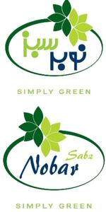

Trade Mark Journal No.2025/020 16 May 2025
WO0000001852064 (29,30,31,32)
Office of origin: Iran (Islamic Republic of)
Date of International Registration:22 February 2025
Date of designation in the UK:
22 February 2025

The phrase of "Nobar Sabz" in English and nobar sabz in Persian language is combined with the leaves as the provided mark. The phrase "simply green" is coming with the logo.
The mark contains the colours light green and dark green and navy blue.
- Class 29
- Canned green beans; vegetables, dried; low-fat potato chips; processed garlic used as a vegetable; vegetable soup preparations; vegetable salads; canned olives; meat; meat, tinned [canned (am)]; canned corn; canned tomatoes; canned chickpeas; vegetable paste; meat salad; canned chickpeas; vegetable mousse; fried potatoes; potato crisps; canned beans; vegetables, cooked; fruit puree; canned beans; vegetable puree; frozen fruits; fruit, preserved; frozen vegetables; black pudding; processed fruit; frozen vegetables; canned salmon; frozen meat; preserved fruits; canned olives; fruits, tinned [canned (am)]; fruit pulp; beans, preserved; hamburger; vegetables, tinned [canned (am)]; vegetables, preserved.
- Class 30
- Wheat starch; garden herbs, preserved; corn starch; ice pops; couscous [semolina]; sherbets [ices]; noodles; potato flour for food; macaroni salad; potato starch for food; ice, natural or artificial.
- Class 31
- Chicory roots; potatoes, fresh; onions, fresh vegetables; grains [cereals]; vegetables, fresh; fruit, fresh.
- Class 32
- Smoothies; vegetable juices [beverages].
nobar sabz co.